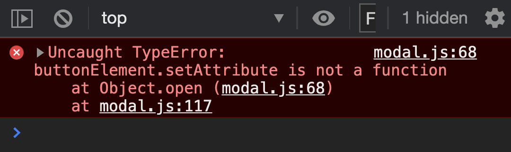

We mentioned before that there are four types of modals:
User-triggered Modal
Timed Modal
Scroll-based Modal
Exit-intent Modal
The code we wrote so far creates a User-triggered Modal. We’re going to add support for a Timed Modal via Inheritance and Polymorphism in this lesson.
Creating the base
Since all four types of modals ARE modals, we can use a subclassing strategy to create derivative modals. To use subclasses, we begin with a base class (or in this case, a base factory since we’re using Factory functions).
We’ll call it BaseModal. We’ll start by copying everything we wrote into BaseModal.
function BaseModal (settings) {
// Copy everything from Modal to BaseModal
}
Derivative modals (like the User-triggered Modal and Timed Modal) should inherit from this BaseModal. We can do this by calling the base factory.
function UserTriggeredModal (settings) {
const modal = BaseModal(settings)
}
function TimedModal (settings) {
const modal = BaseModal(settings)
}
Polymorphism
Users need to be able specify the type of modal they want to create. To do this, we can ask them to pass in a type setting.
// main.js
Modal({
// ...
type: 'normal'
})
We then use this type setting to determine whether to run UserTriggeredModal or TimedModal. This pattern is also called Factory Pattern, Adhoc Polymorphism, or Function Overloading. (These are big words for a simple if or switch statement).
// modal.js
export default function Modal (settings) {
const { type } = settings
switch (type) {
case 'normal': UserTriggeredModal(settings); break
case 'time': TimedModal(settings); break
}
}
Specifying a default type
Modal doesn’t do anything if the user doesn’t specify a type. To make it easier for users, we can specify a default type for them. In this case, let’s say we want to define the UserTriggeredModal as the default modal.
There are two ways to do this.
The first way is to create a default statement in the switch statement.
export default function Modal (settings) {
const { type } = setting
switch (type) {
case 'normal': UserTriggeredModal(settings); break
case 'time': TimedModal(settings); break
default: UserTriggeredModal(settings)
}
}
If we do this, we can omit the normal case since it’s the default.
export default function Modal (settings) {
const { type } = setting
switch (type) {
case 'time': TimedModal(settings); break
default: UserTriggeredModal(settings)
}
}
The second method is to add a type property to the defaults object. We’ll set type to normal.
const defaults = {
// ...
type: 'normal'
}
Then we merge defaults with settings in Modal. Now, if the user fails to specify type, type will be normal.
export default function Modal (settings) {
setting = Object.assign({}, defaults, settings)
const { type } = setting
switch (type) {
case 'normal': UserTriggeredModal(settings); break
case 'time': TimeModal(settings); break
}
}
When we use the second method, we don’t need to merge defaults with settings again inside BaseModal.
function BaseModal(settings) {
// Remove this
setting = Object.assign({}, defaults, settings)
}
Creating a Timed Modal
A Timed Modal opens after a specific amount of time has passed. Users should be able to set this time. Let’s ask the user to pass in a delayBeforeOpening option to set this time.
Let’s start by following the error’s stack trace. This will help you identify where the error comes from and how to solve it.
Here, we know:
The error originated from BaseModal.
Before running BaseModal, the code was at TimedModal.
Before running TimedModal, the code was at Modal.
Before running Modal, the code was at main.js.
The error could have happened at any point of this stack trace. In this case, we know the error happened because the user didn’t pass a buttonElement into Modal in main.js.
However, the user wasn’t at fault. Timed Modals don’t open with a trigger button. It opens after a certain time has elapsed. This means we need to shift buttonElement's event listener from BaseModal to UserTriggeredModal.
function BaseModal (settings) {
// Remove this
buttonElement.addEventListener('click', _ => modal.open())
}
function UserTriggeredModal (settings) {
// Put it here
const { buttonElement } = settings
buttonElement.addEventListener('click', _ => modal.open())
}
Opening a Timed Modal
Timed Modals open after a certain amount of time has passed. We can open a Timed Modal with a setTimeout function. The delayBeforeOpening value can be passed to this setTimeout function.
function TimedModal (settings) {
setTimeout(_ => {
// Open the modal here
}, settings.delayBeforeOpening)
}
We can use the open method we defined in BaseModal to open the Timed Modal. Before we do this, we need to return the modal object in BaseModal.
function BaseModal (settings) {
// ...
return modal
}
We can now use modal.open to open the Timed Modal.
Unfortunately, even though modal.open works, we get another error.

Fixing the error
We used buttonElement.setAttribute in open. This line creates the error since buttonElement is not defined inside Timed Modals.
We need to shift this line from BaseModal to UserTriggeredModal. We’ll start by removing it from BaseModal.
function BaseModal () {
// ...
const modal = {
open () {
// Remove this
buttonElement.setAttribute('aria-expanded', true)
}
}
// ...
}
When we call modal.open from UserTriggeredModal, we need to make sure we add that aria-expanded line in. The easiest way is to add the code inside the event listener.
We run into the buttonElement.setAttribute error again because buttonElement is not defined in TimedModal. We need to shift this code from BaseModal into UserTriggeredModal.
function BaseModal () {
// ...
const modal = {
close () {
// ...
// Remove these
buttonElement.setAttribute('aria-expanded', false)
buttonElement.focus()
}
}
// ...
}
Unfortunately, it’s not a simple feat to add this buttonElement.setAttribute line into UserTriggeredModal.
Why? Because we used modal.close in all three event listeners in BaseModal, but we did not use modal.close anywhere inside UserTriggeredModal.